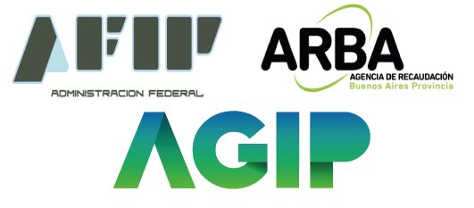

ASESORAMIENTO Y LIQUIDACIÓN DE IMPUESTOS
Brindamos un servicio de consultoría y actualización
impositiva constante. Liquidación de impuestos anuales y mensuales de personas físicas y sociedades,
a saber: Impuesto a las Ganancias, Bienes Personales y Renta Financiera o Impuesto Cedular, Impuesto
al Valor Agregado (IVA), Impuesto sobre los Ingresos Brutos, Tasas Municipales, Sellos, Autónomos y
Monotributo. Consultar por Trámite MiPyme y otros impuestos.

REGULARIZACIÓN FISCAL
Moratorias y Planes de pagos AFIP,ARBA,AGIP (Rentas de la
Ciudad de Buenos Aires). Inscripciones, bajas por cese de actividades y constancias de libre deuda.
Verificación de exclusiones de oficio y aplicación de la Ley de Procedimiento Fiscal, a saber:
Recurso de Apelación, Recusación de Impuestos, Recurso Especial Art. 74. Atención especial en
Juicios Administrativos y ante el Tribunal Fiscal de la Nación (T.F.N.).

INSPECCIONES Y REQUERIMIENTOS
Ofrecemos un servicio especial con el fin de prevenir embargos
y ejecuciones fiscales. Atención de inspecciones integrales AFIP y COMARB. Resolución de conflictos
con organismos de contralor, a saber: requerimientos de Inspección General de Justicia (I.G.J.),
Ministerio de Trabajo, intimaciones de AFIP,AGIP,ARBA.